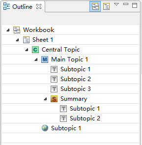
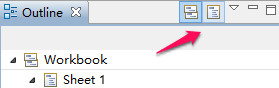

アウトライン
アウトライン、現在のマップかブックに含まれる要素をツリー形式で表示するビューです。さらに直接ここでいくつかのマップの属性を変更できます。
- トピック： アウトラインビューを通してXMind エディターで、トピックをドラッグ&ドロップできます。そのトピックは、マップにコピーされます。アウトラインビュー上のトピックをダブルクリックして直接編集できます。
- ハイパーリンク: トピックがハイパーリンクを使用している場合、その URL が表示されます。

アウトラインビューのツールバーアウトラインにはツールバーがあり、ブック全体か現在のシートのみを表示するかを選択できます。
- ワークブック全体を表示します: クリックすることで、ブック内のすべてのマップを表示します。
- 現在のシートだけを表示します： クリックすることで、現在のマップだけを表示します。
